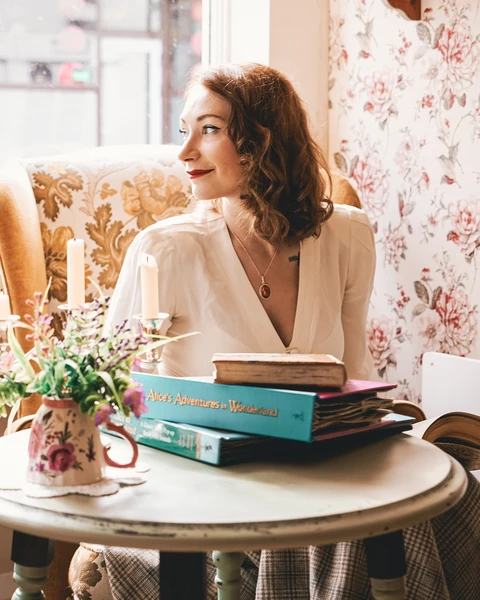

Wioleta Shaw is the pin-up star of our favourite Vintage and Retro Instagram account, @inthepurpleworld. Her vintage-inspired outfits, hair and makeup fuse 1940s nostalgia with modern day fashion. We discovered Wioleta's 'Old World Styling' as the perfect canvas for our Quintessence Amber Jewellery Collection, which boasts a fusion of classic design, historic gemstones and modern metals. Discover Wioleta's 5 Tips On How to Wear Vintage with a Modern Twist:
"Discover the decade from which your style belongs and go for it. With vintage you have pretty much a century's worth of fashion: Posh & Puffy 1900s. The Flirty 1920s Business Beauty 1930s Sexy & Classy 1940s Cute Rockabilly 1950s Hippy Chic 1960s Whether its the lowered waist, pearls and feathers of the roaring 20s, the simple and practical beauty of the 50s, or the pencil dresses and shoulder pads of the 30s - there are so many opportunities to play with. So choose your decade and go for it."
"When you've discovered your Vintage Style - embrace it but don't overdo it. You want to look vintage chic, not like you're taking part in a historical reenactment. This leads on nicely to my next point"
Always add something modern to your look. If your entire outfit and accessories are vintage, don't add a puddle hairstyle, instead, leave your hair in a ponytail. If your hair and clothes are vintage-inspired, opt for a pair of converse or ballerinas to tone down the look. Balance is key with vintage fashion.
Even a simple shift dress from Zara can look Vintage if you mix it up with the right accessories. Don't be afraid to dress up your 'modern' clothes with retro-chic handbags, shoes and of course, jewellery.
"Never forget to be yourself and embrace it. Vintage and retro fashion will always catch people's attention. If you don't feel good, it can quickly become intimidating. Vintage should be fun, playful and a creative way to express yourself. Embrace the attention that you'll receive and feel good about the skin and clothes you're in."